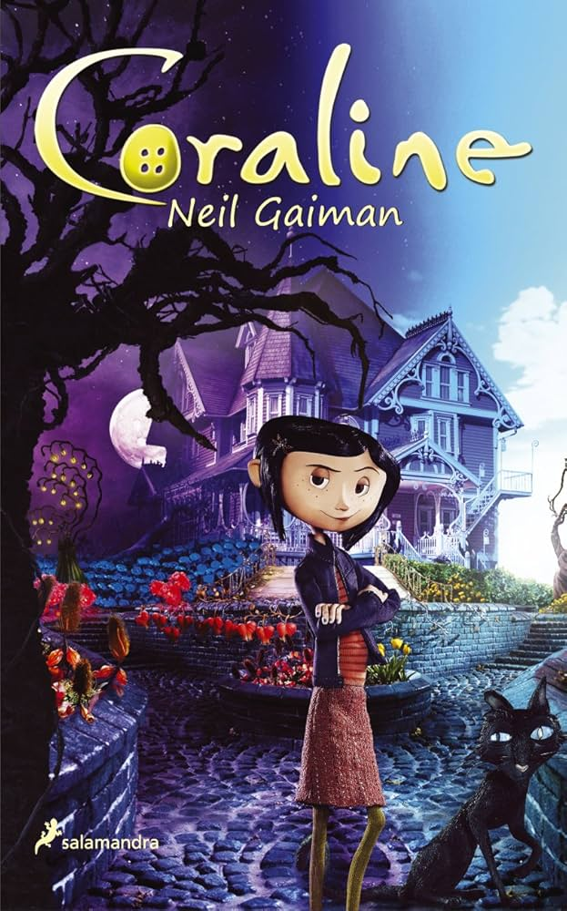

"Coraline", novela de fantasía oscura de Neil Gaiman (2002), sigue a una niña curiosa que descubre una puerta secreta en su nuevo hogar. Al cruzarla, encuentra una versión alterna de su vida con una "otra madre" atenta, pero con ojos de botón, que busca retenerla para siempre. Es una historia sobre valentía, el miedo y valorar lo real.

La historia sigue a Steve, un niño que atraviesa un momento difícil, obsesionado con la enfermedad y la fragilidad de su hermano pequeño. En medio de su angustia familiar, aparecen unas misteriosas avispas que prometen "arreglar" al bebé, convirtiéndose en una presencia inquietante y siniestra.

Las historias abarcan desde la desesperación de padres buscando a un hijo perdido hasta situaciones apocalípticas, como la del último hombre sobre la tierra huyendo de una entidad siniestra.

"El gato negro" (1843) de Edgar Allan Poe es un cuento de terror psicológico narrado por un hombre sentenciado a muerte, quien relata su descenso a la locura impulsado por el alcoholismo. La trama narra cómo maltrata y asesina a su gato, Plutón, para luego asesinar a su esposa y emparedarla, siendo descubierto por el maullido del animal.

"El Ritual" de Adam Nevill es una aclamada novela de terror y supervivencia (folk horror) que narra la travesía de cuatro viejos amigos de la universidad por un bosque milenario y salvaje en el Círculo Polar Ártico escandinavo. Tras perderse y tomar un atajo, el grupo es acechado por una presencia antigua y malévola, enfrentándose a rituales paganos, culto y una lucha desesperada por sobrevivir.

"El Ritual" de Adam Nevill es una aclamada novela de terror y supervivencia (folk horror) que narra la travesía de cuatro viejos amigos de la universidad por un bosque milenario y salvaje en el Círculo Polar Ártico escandinavo. Tras perderse y tomar un atajo, el grupo es acechado por una presencia antigua y malévola, enfrentándose a rituales paganos, culto y una lucha desesperada por sobrevivir.